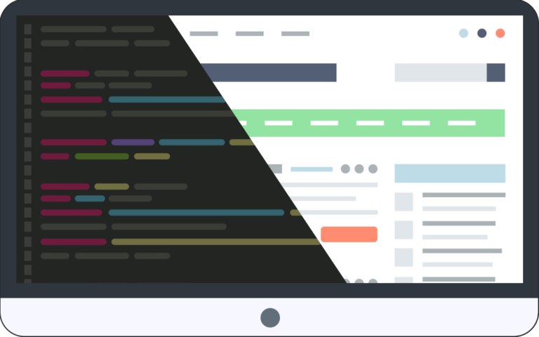
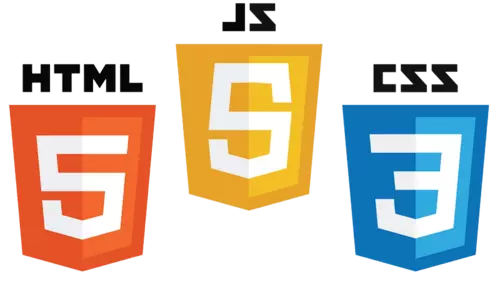

¿Que es el Frontend?El frontend es la parte de una aplicación o sitio web con la que los usuarios interactúan directamente. Se encarga de la interfaz de usuario (UI) y la experiencia de usuario (UX), asegurando que el diseño sea intuitivo, accesible y funcional en distintos dispositivos y navegadores. |
|
Fundamentos del FrontendEl desarrollo frontend se basa en tres tecnologías principales:
|
|
Licenciaruta en sistemas computacionales© Copyright 2025. Joshua Barrantes Mena |
|